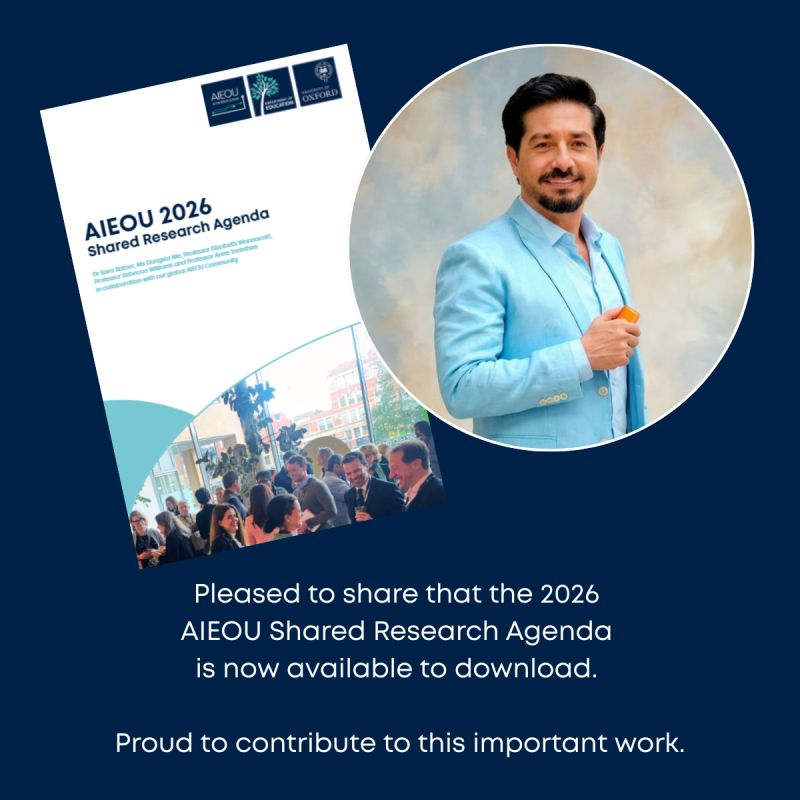
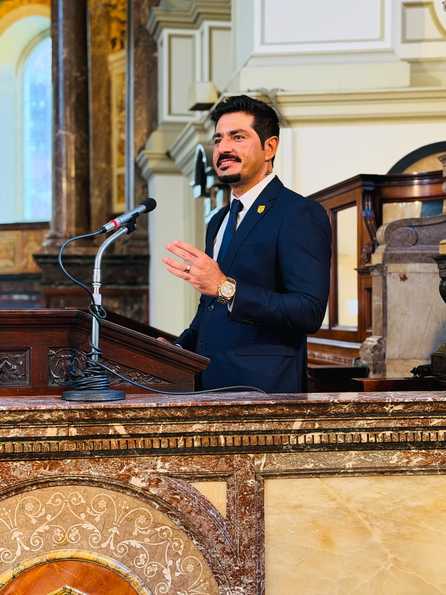
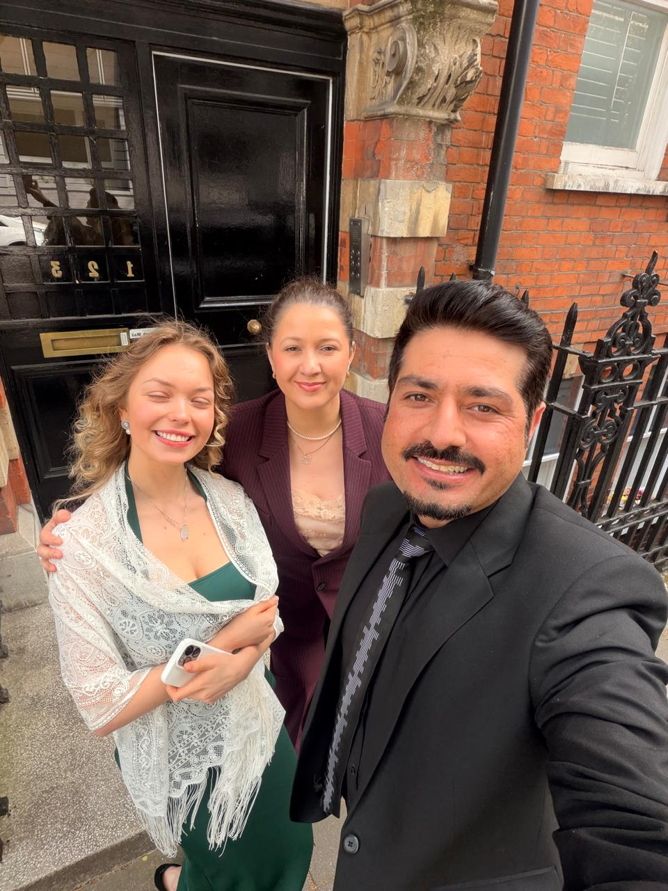

EDUCATIONIST · PRACADEMIC · DATA SCIENTIST · AI RESEARCHER
Education for a more capable future.
I am Shan Ali — SFHEA, CMBE, FRSA — a higher-education leader, researcher, author and entrepreneur working across responsible AI, academic quality, transnational education and meaningful student success.
Believer in lifelong learning, meaningful impact, and education as a force for global good.
PEOPLE · EVIDENCE · TECHNOLOGY
BETTER OUTCOMES
BETTER OUTCOMES
A PRACTICE-LED PERSPECTIVE
Academic rigour, applied leadership and human-centred AI.
I work where learning design, quality systems, international partnership and responsible technology meet. My approach is practical: make the learning meaningful, make the standards visible and make innovation answerable to people.
CURRENT PRACTICE
Leading learning, quality and student success.
As Quality Lead and Senior Lecturer at Regent College London, and a Module Lead/Lecturer at Arden University, I design and lead learning across business, entrepreneurship, marketing, project management, employability and research methods.
View professional experience →SELECTED FOCUS
Work that connects ideas to practice.

RESEARCH LEADERSHIP
Equity, justice and AI in education
Co-Lead and collaborator, AIEOU Equity, Inclusion and Global Justice Collab Lab, University of Oxford.
RECOGNITION
Academic excellence with public purpose
UWS Court Medal recipient and SFHEA, CMBE, FRSA.
TEACHING INNOVATION
Responsible AI in the higher education classroom
Designing learning and assessment that strengthens agency, integrity and employability. Scan to connect
Scan to connect